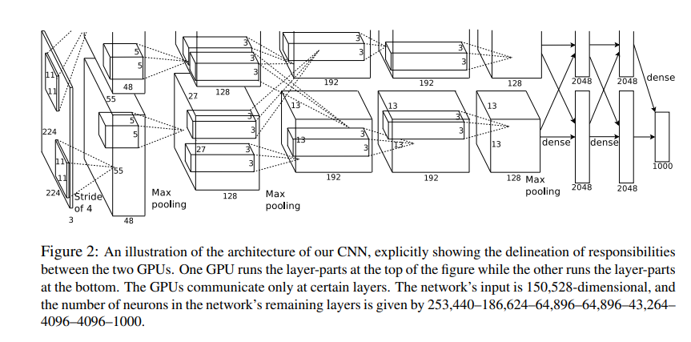
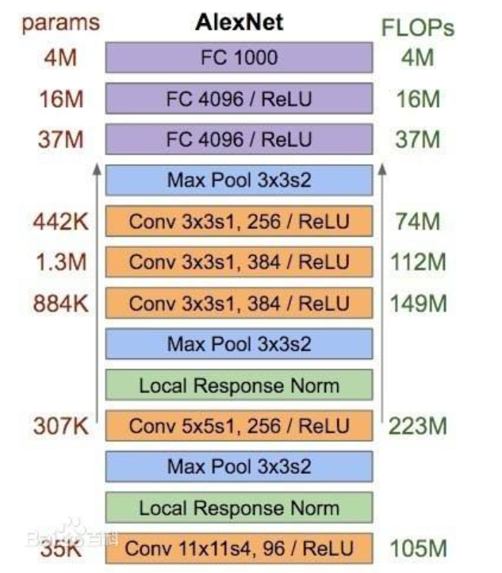
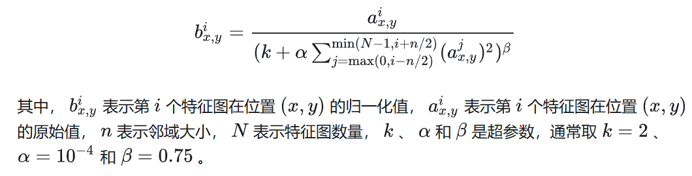

AlexNet¶
论文原文： https://papers.nips.cc/paper/4824-imagenet-classification-with-deep-convolutional-neural-networks
AlexNet输入为RGB三通道的224 × 224 × 3大小的图像（也可填充为227 × 227 × 3 ）。AlexNet 共包含5 个卷积层（包含3个池化）和 3 个全连接层。其中，每个卷积层都包含卷积核、偏置项、ReLU激活函数和局部响应归一化（LRN）模块。第1、2、5个卷积层后面都跟着一个最大池化层，后三个层为全连接层。最终输出层为softmax，将网络输出转化为概率值，用于预测图像的类别。

1、卷积+池化层（前五层）¶
AlexNet共有五个卷积层，每个卷积层都包含卷积核、偏置项、ReLU激活函数和局部响应归一化（LRN）模块。
卷积层C1：使用96个核对224 × 224 × 3的输入图像进行滤波，卷积核大小为11 × 11 × 3，步长为4。将一对55×55×48的特征图分别放入ReLU激活函数，生成激活图。激活后的图像进行最大池化，size为3×3，stride为2，池化后的特征图size为27×27×48（一对）。池化后进行LRN处理。
卷积层C2：使用卷积层C1的输出（响应归一化和池化）作为输入，并使用256个卷积核进行滤波，核大小为5 × 5 × 48。
卷积层C3：有384个核，核大小为3 × 3 × 256，与卷积层C2的输出（归一化的，池化的）相连。
卷积层C4：有384个核，核大小为3 × 3 × 192。
卷积层C5：有256个核，核大小为3 × 3 × 192。卷积层C5与C3、C4层相比多了个池化，池化核size同样为3×3，stride为2。
其中，卷积层C3、C4、C5互相连接，中间没有接入池化层或归一化层。
2、全连接层（后三层）¶
全连接层F6：因为是全连接层，卷积核size为6×6×256，4096个卷积核生成4096个特征图，尺寸为1×1。然后放入ReLU函数、Dropout处理。值得注意的是AlexNet使用了Dropout层，以减少过拟合现象的发生。
全连接层F7：同F6层。
全连接层F8：最后一层全连接层的输出是1000维softmax的输入，softmax会产生1000个类别预测的值。
AlexNet创新¶
1、更深的神经网络¶
AlexNet 是首个真正意义上的深度卷积神经网络，它的深度达到了当时先前神经网络的数倍。通过增加网络深度，AlexNet 能够更好地学习数据集的特征，从而提高了图像分类的精度。

2、使用relu激活函数¶
AlexNet 首次使用了修正线性单元（ReLU）这一非线性激活函数。相比于传统的 sigmoid 和 tanh 函数，ReLU 能够在保持计算速度的同时，有效地解决了梯度消失问题，从而使得训练更加高效。
3、局部响应归一化（LRN）的使用¶
LRN是在卷积层和池化层之间添加的一种归一化操作。在卷积层中，每个卷积核都对应一个特征图（feature map），LRN就是对这些特征图进行归一化。具体来说，对于每个特征图上的每个位置，计算该位置周围的像素的平方和，然后将当前位置的像素值除以这个和。计算过程可以用以下公式表示：

LRN本质是抑制邻近神经元的响应，从而增强了神经元的较大响应。这种技术在一定程度上能够避免过拟合，并提高网络的泛化能力。4、数据增强和Dropout¶
为了防止过拟合，AlexNet 引入了数据增强和 Dropout 技术。数据增强可以通过对图像进行旋转、翻转、裁剪等变换，增加训练数据的多样性，提高模型的泛化能力。Dropout 则是在训练过程中随机删除一定比例的神经元，强制网络学习多个互不相同的子网络，从而提高网络的泛化能力。Dropout简单来说就是在前向传播的时候，让某个神经元的激活值以一定的概率p停止工作，这样可以使模型泛化性更强，因为它不会太依赖某些局部的特征。 直达Dropout深入理解
5、大规模分布式训练¶
AlexNet在使用GPU进行训练时，可将卷积层和全连接层分别放到不同的GPU上进行并行计算，从而大大加快了训练速度。像这种大规模 GPU 集群进行分布式训练的方法在后来的深度学习中也得到了广泛的应用。
AlexNet代码实现¶
1、定义AlexNet网络模型 ```import torch import torch.nn as nn
class AlexNet(nn.Module): def init(self, config): super(AlexNet, self).init() self.config = config # 定义卷积层和池化层 self.features = nn.Sequential( nn.Conv2d(3, 64, kernelsize=11, stride=4, padding=2), nn.ReLU(inplace=True), nn.MaxPool2d(kernelsize=3, stride=2), nn.Conv2d(64, 192, kernelsize=5, stride=1, padding=2), nn.ReLU(inplace=True), nn.MaxPool2d(kernelsize=3, stride=2), nn.Conv2d(192, 384, kernelsize=3, stride=1, padding=1), nn.ReLU(inplace=True), nn.Conv2d(384, 256, kernelsize=3, stride=1, padding=1), nn.ReLU(inplace=True), nn.Conv2d(256, 256, kernelsize=3, stride=1, padding=1), nn.ReLU(inplace=True), nn.MaxPool2d(kernelsize=3, stride=2), ) # 自适应层，将上一层的数据转换成6x6大小 self.avgpool = nn.AdaptiveAvgPool2d((6, 6)) # 全连接层 self.classifier = nn.Sequential( nn.Dropout(), nn.Linear(256 * 6 * 6, 4096), nn.ReLU(inplace=True), nn.Dropout(), nn.Linear(4096, 1024), nn.ReLU(inplace=True), nn.Linear(1024, self.config['num_classes']), )
def forward(self, x):
x = self.features(x)
x = self.avgpool(x)
x = torch.flatten(x, 1)
x = self.classifier(x)
return x
2、定义模型保存与模型加载函数
def saveModel(self):
torch.save(self.statedict(), self.config['model_name'])
def loadModel(self, maplocation): statedict = torch.load(self.config['modelname'], maplocation=maplocation) self.loadstatedict(state_dict, strict=False)
3、数据集预处理
这里选择采用CIFAR-10数据集。
定义构造数据加载器的函数¶
def ConstructDataLoader(dataset, batchsize): return DataLoader(dataset=dataset, batchsize=batchsize, shuffle=True)
图像预处理¶
transform = transforms.Compose([ transforms.Resize(96), transforms.ToTensor(), transforms.Normalize((0.5, 0.5, 0.5), (0.5, 0.5, 0.5)) ])
加载CIFAR-10数据集函数¶
def LoadCIFAR10(download=False): # Load CIFAR-10 dataset traindataset = torchvision.datasets.CIFAR10(root='../CIFAR10', train=True, transform=transform, download=download) testdataset = torchvision.datasets.CIFAR10(root='../CIFAR10', train=False, transform=transform) return traindataset, testdataset
4、模型训练函数封装
import torch.nn as nn
class Trainer(object): # 初始化模型、配置参数、优化器和损失函数 def init(self, model, config): self.model = model self.config = config self.optimizer = torch.optim.Adam(self.model.parameters(),\ lr=config['lr'], weightdecay=config['l2regularization']) self.lossfunc = nn.CrossEntropyLoss() # 对单个小批量数据进行训练，包括前向传播、计算损失、反向传播和更新模型参数 def _trainsinglebatch(self, images, labels): ypredict = self._model(images)
loss = self.loss_func(y_predict, labels)
# 先将梯度清零,如果不清零，那么这个梯度就和上一个mini-batch有关
self._optimizer.zero_grad()
# 反向传播计算梯度
loss.backward()
# 梯度下降等优化器 更新参数
self._optimizer.step()
# 将loss的值提取成python的float类型
loss = loss.item()
# 计算训练精确度
# 这里的y_predict是一个多个分类输出，将dim指定为1，即返回每一个分类输出最大的值以及下标
_, predicted = torch.max(y_predict.data, dim=1)
return loss, predicted
def _train_an_epoch(self, train_loader, epoch_id):
"""
训练一个Epoch，即将训练集中的所有样本全部都过一遍
"""
# 设置模型为训练模式，启用dropout以及batch normalization
self._model.train()
total = 0
correct = 0
# 从DataLoader中获取小批量的id以及数据
for batch_id, (images, labels) in enumerate(train_loader):
images = Variable(images)
labels = Variable(labels)
if self._config['use_cuda'] is True:
images, labels = images.cuda(), labels.cuda()
loss, predicted = self._train_single_batch(images, labels)
# 计算训练精确度
total += labels.size(0)
correct += (predicted == labels.data).sum()
# print('[Training Epoch: {}] Batch: {}, Loss: {}'.format(epoch_id, batch_id, loss))
print('Training Epoch: {}, accuracy rate: {}%%'.format(epoch_id, correct / total * 100.0))
def train(self, train_dataset):
# 是否使用GPU加速
self.use_cuda()
for epoch in range(self._config['num_epoch']):
print('-' * 20 + ' Epoch {} starts '.format(epoch) + '-' * 20)
# 构造DataLoader
data_loader = DataLoader(dataset=train_dataset, batch_size=self._config['batch_size'], shuffle=True)
# 训练一个轮次
self._train_an_epoch(data_loader, epoch_id=epoch)
# 用于将模型和数据迁移到GPU上进行计算，如果CUDA不可用则会抛出异常
def use_cuda(self):
if self._config['use_cuda'] is True:
assert torch.cuda.is_available(), 'CUDA is not available'
torch.cuda.set_device(self._config['device_id'])
self._model.cuda()
# 保存训练好的模型
def save(self):
self._model.saveModel()
5、训练+测试过程
对模型进行训练与测试，最终打印输出测试准确率。
from torch.autograd import Variable
定义参数配置信息¶
alexnetconfig = \ { 'numepoch': 20, # 训练轮次数 'batchsize': 500, # 每个小批量训练的样本数量 'lr': 1e-3, # 学习率 'l2regularization':1e-4, # L2正则化系数 'numclasses': 10, # 分类的类别数目 'deviceid': 0, # 使用的GPU设备的ID号 'usecuda': True, # 是否使用CUDA加速 'modelname': '../AlexNet.model' # 保存模型的文件名 }
if name == "main": #################################################################################### # AlexNet 模型 #################################################################################### traindataset, testdataset = LoadCIFAR10(True) # define AlexNet model alexNet = AlexNet(alexnet_config)
####################################################################################
# 模型训练阶段
####################################################################################
# # 实例化模型训练器
trainer = Trainer(model=alexNet, config=alexnet_config)
# # 训练
trainer.train(train_dataset)
# # 保存模型
trainer.save()
####################################################################################
# 模型测试阶段
####################################################################################
alexNet.eval()
alexNet.loadModel(map_location=torch.device('cpu'))
if alexnet_config['use_cuda']:
alexNet = alexNet.cuda()
correct = 0
total = 0
# 对测试集中的每个样本进行预测，并计算出预测的精度 for images, labels in ConstructDataLoader(testdataset, alexnetconfig['batchsize']): images = Variable(images) labels = Variable(labels) if alexnetconfig['usecuda']: images = images.cuda() labels = labels.cuda()
y_pred = alexNet(images)
_, predicted = torch.max(y_pred.data, 1)
total += labels.size(0)
temp = (predicted == labels.data).sum()
correct += temp
print('Accuracy of the model on the test images: %.2f%%' % (100.0 * correct / total))
```